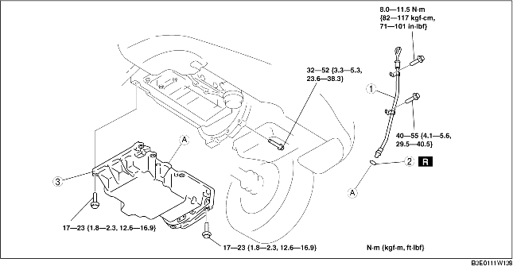

1. Remove the battery cover. (See BATTERY REMOVAL/INSTALLATION [LF].)
2. Disconnect the negative battery cable.
3. Remove the under cover and splash shield as a single unit.
4. Remove the front tire (RH).
5. Drain the engine oil. (See ENGINE OIL REPLACEMENT [LF].)
6. Remove the plug hole plate. (See PLUG HOLE PLATE REMOVAL/INSTALLATION [LF].)
7. Remove the drive belt. (See DRIVE BELT REPLACEMENT [LF].)
8. Set the coolant reserve tank out of the way.
9. Remove the A/C compressor with the pipes still connected. (See A/C COMPRESSOR REMOVAL/INSTALLATION [LF].)
10. Remove the ignition coil. (See IGNITION COIL REMOVAL/INSTALLATION [LF].)
11. Set the accelerator cable bracket out of the way.
12. Remove the crankshaft position (CKP) sensor. (See CRANKSHAFT POSITION (CKP) SENSOR REMOVAL/INSTALLATION [LF].)
13. Remove the engine front cover. (See TIMING CHAIN REMOVAL/INSTALLATION [LF].)
14. Remove in the order indicated in the table.
15. Install in the reverse order of removal.
16. Refill the engine with the specified type and amount of the engine oil. (See ENGINE OIL REPLACEMENT [LF].)
17. Start the engine and inspect for oil leakage.
18. Inspect the oil level. (See ENGINE OIL LEVEL INSPECTION [LF].)
19. Inspect for the ignition timing and idle speed. (See ENGINE TUNE-UP [LF].)

.
|
1
|
Oil level gauge pipe
|
|
2
|
O-ring
|
|
3
|
Oil pan
(See Oil Pan Removal Note.)
(See Oil Pan Installation Note.)
|
1. Remove the oil pan using the separator tool.
1. Completely clean and remove any oil, dirt, sealant or other foreign material that may be adhering to the housing and oil pan.
2. When reusing oil pan installation bolts, clean any old sealant from the bolts.
3. Use a square ruler to align the oil pan and the cylinder block junction side on the engine front cover side.
4. Apply silicone sealant to the oil pan along the inside of the bolt holes as shown in the figure.
5. Tighten the bolts in the order as shown in the figure.